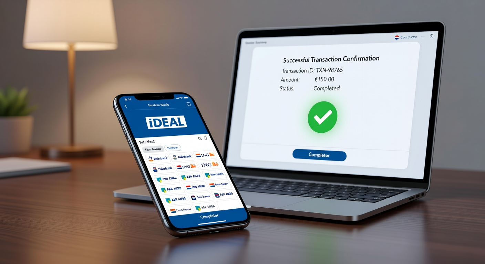
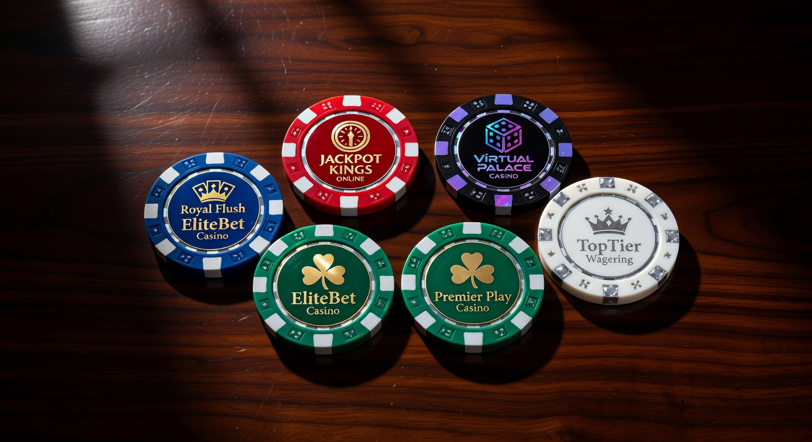
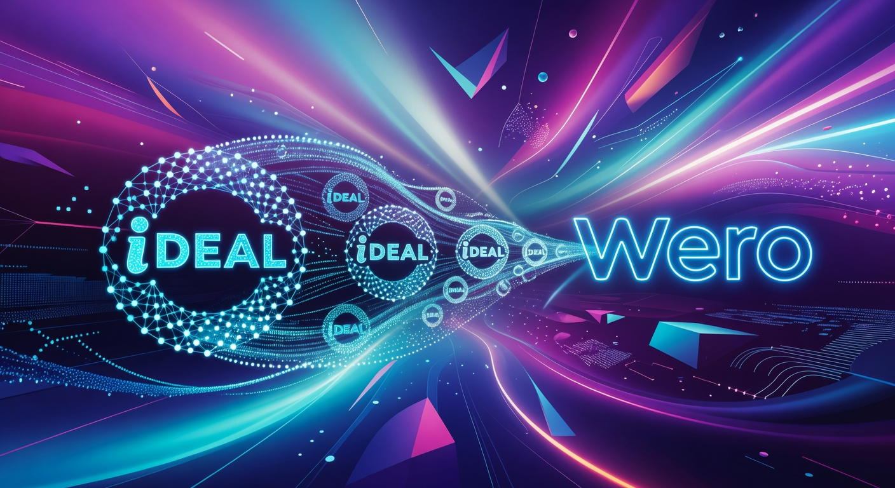

Casino online iDEAL: De beste goksites van 2026
De wereld van online kansspelen in Nederland heeft de afgelopen jaren een enorme vlucht genomen. Sinds de regulering in 2021 is het landschap constant in beweging gebleven, en in 2026 zien we dat de markt volwassener is dan ooit. Voor de Nederlandse speler blijft één aspect echter onveranderd: de voorkeur voor veiligheid en gemak. Wanneer we kijken naar een casino online iDEAL, praten we over de absolute gouden standaard voor betalingen binnen de landsgrenzen.
In 2026 is de integratie tussen banken en goksites naadloos. Waar je vroeger nog wel eens te maken had met vertragingen, is een storting bij een casino online iDEAL tegenwoordig een kwestie van seconden. Dit komt niet alleen door technologische vooruitgang, maar ook door de strikte eisen die de Kansspelautoriteit (Ksa) stelt aan vergunninghouders. Veiligheid staat voorop, en iDEAL vormt hierbij de ruggengraat van het financiële vertrouwen tussen de speler en de aanbieder.
Dit artikel duikt diep in de huidige staat van de Nederlandse gokmarkt. We bespreken waarom een casino online iDEAL nog steeds de beste keuze is, welke nieuwe ontwikkelingen zoals Wero de kop opsteken, en welke aanbieders in 2026 de troon bestijgen. Of je nu een ervaren high-roller bent of een recreatieve speler die af en toe een gokje waagt op fruitautomaten, deze gids biedt alle nodige informatie om veilig en verantwoord te spelen.
Wat is een iDEAL casino precies?
Een casino online iDEAL is een digitaal gokplatform dat een officiële licentie heeft van de Nederlandse Kansspelautoriteit en de betaalmethode iDEAL faciliteert. In de praktijk betekent dit dat het casino voldoet aan de strengste wetgeving ter wereld op het gebied van consumentenbescherming. Alleen partijen die door de zware screening van de Ksa komen, mogen deze vertrouwde Nederlandse betaalmethode aanbieden aan hun spelers.
Het unieke aan een online casino dat iDEAL gebruikt, is de directe koppeling met je eigen bankomgeving. In 2026 maken vrijwel alle Nederlandse banken gebruik van de nieuwste API-koppelingen, waardoor de transactie niet alleen veilig is, maar ook direct zichtbaar in je bank-app. Het fungeert als een digitale brug die ervoor zorgt dat je geen gevoelige creditcardgegevens hoeft te delen met het casino zelf.
Daarnaast is de term "iDEAL casino" in 2026 synoniem geworden met legaliteit. Omdat iDEAL (beheerd door Currence) zeer selectief is in met wie zij samenwerken, vind je deze betaaloptie vrijwel nooit bij illegale buitenlandse aanbieders. Als je het logo ziet staan bij een casino online iDEAL, weet je direct dat je te maken hebt met een legale aanbieder die onder toezicht staat en bijdraagt aan de Nederlandse kansspelbelasting.
Hoe werkt storten bij een online casino met iDEAL?

Het proces van geld storten bij een casino online iDEAL is in 2026 verder geoptimaliseerd voor mobiel gebruik. De meeste spelers maken gebruik van hun smartphone, waarbij de biometrische beveiliging van de bank-app (zoals FaceID of een vingerafdruk) de transactie binnen enkele tellen autoriseert. Het is een gesloten systeem waarbij de gegevens van de zender en ontvanger vooraf zijn geverifieerd.
Wanneer je een storting initieert, word je vanuit de kassa van het online casino met iDEAL direct doorgeleid naar de beveiligde omgeving van jouw bank. Hier staat het bedrag en de begunstigde al ingevuld. In 2026 zien we dat veel casino's gebruikmaken van 'instant payments', wat betekent dat het geld niet alleen direct van je rekening is, maar ook onmiddellijk in je spelersaccount staat, klaar om ingezet te worden bij het live casino iDEAL of op je favoriete slots.
Een cruciaal aspect van deze werking is de koppeling met iDIN. Bij veel legale aanbieders wordt je eerste iDEAL-storting gecombineerd met een identiteitsverificatie. Dit zorgt ervoor dat het casino online iDEAL direct weet dat de rekeninghouder ook daadwerkelijk de persoon is die het account heeft aangemaakt. Dit proces helpt fraude te voorkomen en zorgt ervoor dat uitbetalingen later in het proces veel sneller verwerkt kunnen worden.
Stappenplan: Je eerste storting voltooien
- Kies een vergund casino: Selecteer een aanbieder uit onze top 5 die beschikt over een Nederlandse licentie.
- Maak een account aan: Gebruik iDIN voor een snelle registratie. Dit is de standaard in 2026 voor een casino online iDEAL.
- Navigeer naar de 'Kassa': Klik op de knop 'Storten' of 'Deposit' in je accountoverzicht.
- Selecteer iDEAL: Kies het iDEAL-logo en selecteer jouw bank (zoals Rabobank of ABN AMRO).
- Voer het bedrag in: Let hierbij op de minimale storting en eventuele limieten die je hebt ingesteld.
- Autoriseer de betaling: Scan de QR-code of open direct de bank-app op je telefoon om te bevestigen.
- Begin met spelen: Het saldo is direct bijgewerkt in het casino online iDEAL.
Welke banken worden ondersteund?
In 2026 worden vrijwel alle Nederlandse consumentenbanken ondersteund door het casino online iDEAL ecosysteem. De dekking is bijna 100%, wat betekent dat iedereen met een Nederlandse betaalrekening terecht kan. De grootste spelers zijn uiteraard de traditionele banken, maar ook de nieuwere digitale banken zijn volledig geïntegreerd.
Onder de ondersteunde banken vallen onder andere:
- ABN AMRO
- Rabobank
- ING
- SNS Bank
- RegioBank
- ASN Bank
- Bunq (zeer populair voor snelle mobiele transacties)
- Knab
- Triodos Bank
Dankzij de Europese PSD2-richtlijnen is de communicatie tussen deze banken en een casino online iDEAL uiterst efficiënt. Bovendien bieden banken zoals Bunq en Knab vaak extra snelle verwerkingstijden aan, wat perfect aansluit bij de behoefte van de moderne online gokker die direct wil kunnen spelen.
Voordelen van betalen via je eigen vertrouwde bank
Het grootste voordeel van een casino online iDEAL is zonder twijfel het vertrouwen. De meeste Nederlanders gebruiken iDEAL dagelijks voor hun online aankopen bij webwinkels. Deze bekendheid vertaalt zich naar een veilig gevoel in de casino-omgeving. Je hoeft geen nieuwe accounts aan te maken bij e-wallets of ingewikkelde crypto-wallets te beheren; je gebruikt de interface die je al kent en vertrouwt.
Een ander significant voordeel is de privacy. Hoewel het casino online iDEAL natuurlijk je persoonlijke gegevens heeft vanwege de wettelijke registratieplicht, worden je bankgegevens (zoals je inlogcodes en pincodes) nooit gedeeld met de goksite. De transactie vindt plaats in de beveiligde tunnel van je eigen bank. Dit minimaliseert het risico op phishing en datalekken bij het casino zelf.
Daarnaast is snelheid een doorslaggevende factor. In 2026 is "wachten op je geld" simpelweg geen optie meer. Een online casino met iDEAL zorgt voor onmiddellijke verwerking. Dit geldt niet alleen voor stortingen, maar door de koppeling met 'Instant Payouts' zien we in 2026 ook dat winsten vaak binnen enkele minuten terug op de bankrekening staan. Dit niveau van efficiëntie is met methoden als creditcards of bankoverschrijvingen vaak lastiger te realiseren.
Top 5 online casino iDEAL selectie van onze experts

Onze experts hebben de markt in 2026 uitvoerig geanalyseerd om de beste opties voor de Nederlandse speler te filteren. Bij deze selectie is niet alleen gekeken naar het spelaanbod, maar specifiek naar de integratie van iDEAL, de snelheid van uitbetalingen en de kwaliteit van de klantenservice. Hieronder volgen de absolute topkeuzes voor een casino online iDEAL.
| Casino | Belangrijkste Kenmerk | Welkomstbonus 2026 | Uitbetalingssnelheid |
|---|---|---|---|
| BetMGM | Beste Live Casino | 100% tot €250 + 50 Free Spins | Instant (0-5 min) |
| 711 Casino | Hoogste Bonussen | 100% tot €711 | Zeer Snel (< 15 min) |
| Kansino | Grootste Spelaanbod | €25 No Deposit Bonus | Instant (Direct) |
| LeoVegas | Beste Mobiele App | 200 Free Spins bij storting | Snel (< 1 uur) |
| Jacks.nl | Beste voor Sportsbetting | Tot €100 aan Free Bets | Binnen 1 dag |
BetMGM – De koning van de Nederlandse markt
Sinds de intrede op de Nederlandse markt heeft BetMGM zich gepositioneerd als een premium aanbieder. In 2026 is dit casino online iDEAL de favoriet voor spelers die houden van een authentieke Las Vegas ervaring. De interface is chique en de integratie met Nederlandse banken is vlekkeloos. Vooral voor high-rollers biedt BetMGM uitstekende limieten en een VIP-programma dat zijn weerga niet kent.
Het live casino gedeelte bij BetMGM is indrukwekkend. Ze maken gebruik van exclusieve tafels waar je in het Nederlands kunt communiceren met de dealers. Wanneer je wint, kun je rekenen op een uitbetalingsproces dat in 2026 volledig geautomatiseerd is. Een casino online iDEAL zoals BetMGM zet hiermee de standaard voor de rest van de industrie.
711 Casino – Voor de hoogste bonussen
Als je op zoek bent naar maximale waarde voor je eerste storting, dan is 711 Casino de plek waar je moet zijn. Dit van oorsprong Belgische bedrijf heeft de harten van Nederlanders gestolen met hun gulle bonusbeleid. In een casino online iDEAL is het vaak lastig om grote bonussen te vinden vanwege strikte regelgeving, maar 711 weet altijd een competitief aanbod neer te zetten zonder dat de voorwaarden onmogelijk worden.
Naast de bonussen staat 711 bekend om zijn enorme selectie aan slots. Van klassieke fruitautomaten tot de nieuwste Megaways-titels, het aanbod is gigantisch. De iDEAL-betalingen verlopen hier zonder enige frictie, en hun klantenservice is 24/7 bereikbaar via chat om eventuele vragen over transacties direct op te lossen.
Kansino – Snelste uitbetalingen in Nederland
Kansino was een van de eersten die de Nederlandse markt betrad en heeft sindsdien niet stilgezeten. Dit casino online iDEAL heeft een duidelijke focus: geen poespas, gewoon spelen. Ze bieden geen ingewikkelde bonussen aan met lastige rondspeelvoorwaarden, maar focussen zich volledig op de spelervaring en de snelheid van het platform.
In 2026 staat Kansino bekend als het 'payout-monster'. Zodra je op de knop 'Uitbetalen' klikt, wordt het verzoek via het iDEAL-netwerk (en de bijbehorende SEPA Instant Credit Transfer) direct verwerkt. Voor veel spelers is dit de reden om exclusief bij Kansino te blijven. Het is de ultieme uiting van een modern online casino met iDEAL.
Belangrijke limieten en transactiekosten
In 2026 zijn de regels rondom speellimieten aangescherpt door de Kansspelautoriteit. Elk casino online iDEAL is verplicht om spelers te dwingen limieten in te stellen bij registratie. Dit omvat een stortingslimiet, een tijdslimiet en een maximaal saldo op je account. Deze limieten zijn cruciaal voor verantwoord gokken en helpen spelers om binnen hun budget te blijven.
Wat betreft transactiekosten hebben we goed nieuws voor de Nederlandse speler: bij vrijwel elk legaal casino online iDEAL zijn stortingen en uitbetalingen volledig gratis. Het casino neemt de kosten die Currence of de banken in rekening brengen voor eigen rekening. Dit is een groot voordeel ten opzichte van sommige creditcards of internationale bankoverschrijvingen waarbij vaak verborgen kosten of ongunstige wisselkoersen om de hoek komen kijken.
De minimale storting bij een online casino ligt meestal tussen de €10 en €20. Voor uitbetalingen geldt vaak een minimum van €10. De maximale limieten per transactie via iDEAL kunnen variëren per bank, maar liggen meestal rond de €50.000. Voor de meeste spelers is dit meer dan voldoende. Mocht je een enorme jackpot winnen in een casino online iDEAL, dan wordt de uitbetaling vaak in delen of via een handmatige bankoverdracht afgehandeld in overleg met de klantenservice.
De toekomst: Van iDEAL naar Wero

Een interessante ontwikkeling die we in 2026 nauwlettend in de gaten houden, is de transitie van iDEAL naar Wero. Voor wie het nog niet weet: iDEAL is overgenomen door het European Payments Initiative (EPI). Het doel is om van iDEAL een Europese standaard te maken onder de naam Wero. Voor de bezoeker van een casino online iDEAL zal er in eerste instantie weinig veranderen aan de gebruikerservaring.
Wero belooft nog snellere, pan-Europese betalingen en extra functies zoals 'buy now, pay later' (al is dat laatste bij een online casino verboden door de Ksa). De vertrouwde interface van iDEAL zal geleidelijk worden aangepast, maar de veiligheid en de directe koppeling met je bank blijven de kernwaarden. In 2026 zien we dat de meeste casino's al beide logo's tonen om de overgang voor de consument zo soepel mogelijk te laten verlopen.
Deze verandering zorgt er ook voor dat Nederlandse spelers in de toekomst wellicht makkelijker bij legale casino's in andere EU-landen kunnen spelen, mits de wetgeving dat toestaat. Echter, voorlopig blijft de Nederlandse licentie van de Ksa leidend. Een casino online iDEAL zal dus ook onder de vlag van Wero aan de strengste Nederlandse eisen moeten blijven voldoen.
Bonussen bij een online casino iDEAL
Bonussen zijn in 2026 nog steeds een belangrijk instrument voor casino's om nieuwe spelers aan te trekken. Wanneer je stort bij een casino online iDEAL, kom je vrijwel altijd in aanmerking voor een welkomstbonus. Dit in tegenstelling tot sommige e-wallets zoals Skrill of Neteller, die vaak worden uitgesloten van bonusacties vanwege fraudegevoeligheid. Met iDEAL is de verificatie zo sterk dat casino's met een gerust hart bonussen kunnen uitkeren.
De meest voorkomende bonussen zijn:
- Stortingsbonus: Je eerste storting wordt verdubbeld (bijv. 100% bonus).
- Free Spins: Je krijgt een aantal gratis rondes op een populaire gokkast.
- No Deposit Bonus: Een klein bedrag aan speelgeld alleen voor het aanmaken van een account.
- Cashback: Een percentage van je verliezen wordt teruggestort (let op: dit is in Nederland beperkt toegestaan).
Het is essentieel om altijd de bonusvoorwaarden te lezen. In 2026 zien we dat de Kansspelautoriteit streng toeziet op de transparantie hiervan. Rondspeelvoorwaarden (wagering requirements) moeten duidelijk worden gecommuniceerd. Bij een betrouwbaar casino online iDEAL zoals 711 Casino of LeoVegas weet je zeker dat de voorwaarden eerlijk zijn en dat je ook echt een kans hebt om de bonus vrij te spelen en winst te laten uitbetalen.
Veiligheid en de rol van de Kansspelautoriteit
De veiligheid van de speler is de hoogste prioriteit van de Kansspelautoriteit (Ksa). Sinds de invoering van de Wet Kansspelen op Afstand (Wok) moeten aanbieders aan honderden eisen voldoen. Een casino online iDEAL wordt constant gemonitord op zaken als eerlijk spel, tijdige uitbetalingen en het beschermen van kwetsbare groepen. De Ksa heeft in 2026 de bevoegdheid om direct in te grijpen en boetes uit te delen die in de miljoenen kunnen lopen.
Een cruciaal onderdeel van dit veiligheidssysteem is CRUKS (Centraal Register Uitsluiting Kansspelen). Elke speler die zich inschrijft bij een casino online iDEAL wordt gecontroleerd tegen dit register. Als je in CRUKS staat, krijg je geen toegang tot de website. Dit is een zelfbeschermingsmaatregel die zeer effectief is gebleken in het terugdringen van gokverslaving in Nederland.
Bovendien moeten alle spellen in een online casino worden getest door onafhankelijke keuringsinstanties zoals eCOGRA of iTech Labs. Dit garandeert dat de Random Number Generator (RNG) eerlijk werkt en dat de uitbetalingspercentages (RTP) kloppen met wat het casino beweert. Wanneer je kiest voor een casino online iDEAL, speel je dus in een omgeving die technisch en juridisch volledig is dichtgetimmerd.
Voor meer informatie over de regelgeving in Nederland kun je de officiële website van de Kansspelautoriteit raadplegen. Ook kun je op Wikipedia meer lezen over de geschiedenis en de taken van dit belangrijke orgaan.
Registreren bij een casino online iDEAL
Het registratieproces bij een casino online iDEAL is in 2026 gestroomlijnder dan ooit tevoren. Waar je vroeger nog handmatig foto's van je paspoort moest uploaden, gaat nu bijna alles via iDIN. Dit is een verificatiemethode ontwikkeld door banken, waarmee je veilig je identiteit kunt bevestigen bij het casino met de inlogmethode van je eigen bank.
Wanneer je op de registratieknop klikt bij een online casino, kies je voor 'Registreren via iDIN'. Je selecteert je bank, scant een QR-code, en het casino ontvangt direct je geverifieerde naam, adres en leeftijd. Dit is niet alleen sneller, maar ook veel veiliger omdat er geen kopieën van identiteitsbewijzen meer over de digitale lijn gaan die onderschept kunnen worden.
Na de iDIN-check hoef je vaak alleen nog maar je e-mailadres en telefoonnummer te bevestigen en je speellimieten in te stellen. Binnen twee minuten ben je klaar om je eerste storting te doen bij het casino online iDEAL. Dit proces is in 2026 de standaard geworden bij alle grote namen zoals bet365, Bingoal en Jacks.nl.
Live casino iDEAL: De ultieme ervaring
Een van de meest populaire secties in het casino online iDEAL is zonder twijfel het live casino. Hier speel je tegen echte dealers via een high-definition livestream. De technologie is in 2026 zo geavanceerd dat er nauwelijks vertraging is, en je kunt vanuit meerdere camerahoeken de actie volgen. Of het nu gaat om Roulette, Blackjack of Baccarat, de ervaring is bijna niet meer te onderscheiden van een fysiek casino.
Wat het live casino iDEAL extra aantrekkelijk maakt, zijn de game shows. Denk aan titels van providers zoals Evolution Gaming en Pragmatic Play, zoals Crazy Time, Monopoly Live en Lightning Roulette. Deze spellen combineren elementen van traditionele gokspellen met entertainment uit televisieshows. De mogelijkheid om direct geld bij te storten via iDEAL terwijl je aan een tafel zit, zorgt ervoor dat je nooit een ronde hoeft te missen.
Bovendien bieden veel Nederlandse casino's nu ook 'Native Tables' aan. Dit zijn tafels waar de dealers Nederlands praten. In een casino online iDEAL zoals BetMGM of Casino 777 vind je deze tafels de hele dag door. Het kunnen chatten met de dealer en medespelers in je eigen taal voegt een sociaal aspect toe dat veel spelers enorm waarderen.
Legale Online Casino's Nederland: Een overzicht
In 2026 is de lijst met legale aanbieders gegroeid, maar de markt is ook geconsolideerd. Alleen de sterkste partijen met de beste service overleven. Het is belangrijk om te onthouden dat je alleen moet spelen bij casino's die het 'Kansspelautoriteit Vergunninghouder' logo op hun website dragen. Dit is de enige garantie dat je bij een legaal casino online iDEAL speelt.
Enkele prominente namen die in 2026 de markt domineren zijn:
- TonyBet: Een sterke allrounder met een focus op sport en casino.
- Circus Casino: Bekend om hun uitstekende loyaliteitsprogramma en evenementen.
- Hard Rock Casino: De legendarische naam die ook in Nederland een grote schare fans heeft.
- Fair Play Casino online: De digitale tak van de bekende gokhallen, met veel exclusieve slots.
Deze aanbieders hebben allemaal gemeen dat ze een online casino met iDEAL aanbieden dat volledig is geoptimaliseerd voor de Nederlandse wetgeving. Ze dragen af aan het verslavingspreventiefonds en werken nauw samen met instanties voor verantwoord gokken. Spelen bij een legaal casino online iDEAL betekent dus ook bijdragen aan een veiligere gokomgeving in Nederland.
Casino 777 en andere grote namen
Casino 777 verdient een speciale vermelding. In 2026 is dit platform uitgegroeid tot een van de meest verfijnde opties voor de Nederlandse speler. Hun aanbod aan slots is samengesteld uit de beste titels van de wereld. De interface is donker, stijlvol en zeer overzichtelijk. Als je een casino online iDEAL zoekt dat luxe uitstraalt, dan is 777 een topkandidaat.
Naast 777 zien we dat Jacks.nl ook een enorme groei heeft doorgemaakt. Door hun sterke aanwezigheid in de Nederlandse winkelstraten hebben ze een enorme naamsbekendheid. Hun online platform is een naadloze verlenging van de fysieke ervaring. Met snelle iDEAL-transacties en een focus op zowel casino als sportwedstrijden, is het een van de meest complete casino online iDEAL sites van dit moment.
Ook LeoVegas blijft een zwaargewicht. Na hun tijdelijke afwezigheid in de beginjaren van de regulering, zijn ze in 2026 sterker dan ooit terug. Hun 'mobile-first' benadering zorgt ervoor dat hun app de beste in de markt is. Voor wie graag onderweg speelt in een casino online iDEAL, is LeoVegas vaak de eerste keuze.
Mobiel gokken bij een online casino iDEAL
In 2026 wordt meer dan 85% van alle weddenschappen in Nederland geplaatst via een mobiel apparaat. De tijd van gokken op een desktop is grotendeels voorbij. Een modern casino online iDEAL is daarom volledig gebouwd met de mobiele gebruiker in gedachten. Of je nu een iPhone of een Android-toestel gebruikt, de websites schalen perfect mee en de spellen laden razendsnel.
De integratie van iDEAL is op mobiel zelfs nog makkelijker. Omdat je bank-app op hetzelfde apparaat staat als het casino, word je met één klik overgezet naar je bankomgeving en weer terug. Geen gedoe met tokens of scanners; je gezicht of vingerafdruk is genoeg om de betaling te bevestigen. Dit gemak maakt een casino online iDEAL de ultieme metgezel voor tijdens het reizen of gewoon op de bank.
Veel aanbieders hebben ook hun eigen apps ontwikkeld die je kunt downloaden in de App Store of Google Play Store. Deze apps bieden vaak extra functies zoals push-notificaties voor nieuwe bonussen of snelle toegang tot je favoriete spellen. In 2026 is de app van een casino online iDEAL een veilige en snelle manier om toegang te krijgen tot het volledige aanbod van slots en live tafels.
Alternatieve betaalmethoden in Nederland
Hoewel dit artikel focust op het casino online iDEAL, zijn er in 2026 natuurlijk ook alternatieven beschikbaar. Sommige spelers hebben specifieke redenen om een andere methode te kiezen, bijvoorbeeld omdat ze hun gokuitgaven gescheiden willen houden van hun hoofdrekening.
Veelgebruikte alternatieven zijn:
- Creditcards (VISA/Mastercard): Overal geaccepteerd, maar vaak met tragere uitbetalingen dan iDEAL.
- Trustly: Werkt vergelijkbaar met iDEAL en wordt vaak gebruikt voor Pay N Play concepten.
- Apple Pay / Google Pay: Extreem snel op mobiel, maar nog niet bij elk online casino beschikbaar voor uitbetalingen.
- PayPal: Een vertrouwde e-wallet die in 2026 bij steeds meer Nederlandse casino's te vinden is.
Ondanks deze alternatieven blijft het casino online iDEAL marktleider. De reden is simpel: het is de enige methode die specifiek voor de Nederlandse markt is gebouwd en door elke Nederlandse bank wordt ondersteund zonder extra kosten of ingewikkelde tussenstappen. Voor de meeste spelers is er in 2026 simpelweg geen reden om voor iets anders te kiezen.
Verantwoord gokken en preventie
Het plezier van spelen in een casino online iDEAL moet altijd vooropstaan. Echter, in 2026 is er meer aandacht dan ooit voor de risico's van kansspelverslaving. De legale aanbieders hebben een zorgplicht. Dit betekent dat ze je speelgedrag monitoren. Als je plotseling veel meer gaat storten of op ongebruikelijke tijden speelt, kan het casino contact met je opnemen om te vragen of het nog wel goed gaat.
Als speler heb je ook tools in handen. Naast de eerder genoemde limieten bij een online casino met iDEAL, kun je jezelf ook tijdelijk of permanent uitsluiten. Het platform biedt directe links naar hulpinstanties zoals het Loket Kansspel of de Anonieme Gokkers (AGOG). In 2026 is het stigma op het zoeken naar hulp grotendeels verdwenen, mede door de openheid van de branche en de Kansspelautoriteit.
Onthoud altijd: gokken is een vorm van entertainment, geen manier om geld te verdienen. Speel alleen met geld dat je kunt missen en stel je limieten in voordat je begint in een casino online iDEAL. Voor meer informatie over veilig internetgebruik en bescherming kun je terecht op Consumentenbond.nl.
Conclusie: Waarom kiezen voor deze betaalmethode?
Samenvattend kunnen we stellen dat in 2026 een casino online iDEAL de meest logische, veilige en efficiënte keuze is voor iedere Nederlandse gokker. De combinatie van de strenge controle door de Kansspelautoriteit en de bewezen betrouwbaarheid van iDEAL zorgt voor een zorgeloze speelervaring. Of je nu gaat voor de enorme bonussen van 711 Casino, de snelheid van Kansino, of de luxe van BetMGM, je weet dat je geld in goede handen is.
De technologische vooruitgang, zoals de integratie van iDIN voor snelle registratie en de aanstaande overgang naar Wero, laat zien dat de markt blijft innoveren. Een casino online iDEAL biedt niet alleen toegang tot de beste fruitautomaten en live dealer games, maar doet dit ook binnen een kader dat consumentenbescherming ademt. Het is de perfecte synergie tussen modern bankieren en digitaal entertainment.
Ben je klaar om de stap te zetten? Kies een van de vergunde aanbieders uit onze lijst, stel je limieten verstandig in, en ontdek zelf waarom het casino online iDEAL ook in 2026 de onbetwiste koning van de Nederlandse markt is. Veel succes en speel verantwoord!
Veelgestelde vragen
Is gokken bij een casino online iDEAL legaal?
Ja, mits het casino beschikt over een licentie van de Nederlandse Kansspelautoriteit. iDEAL wordt alleen aangeboden door legale casino's die voldoen aan de Nederlandse wetgeving. In 2026 is het makkelijk te controleren via het keurmerk van de Ksa op de website van de aanbieder.
Hoe snel staat geld op mijn rekening bij een uitbetaling?
Bij de meeste moderne casino online iDEAL sites, zoals Kansino en BetMGM, worden uitbetalingen via SEPA Instant Credit Transfer verwerkt. Dit betekent dat het geld vaak binnen 1 tot 15 minuten na goedkeuring op je bankrekening staat, zelfs in het weekend.
Zijn er kosten verbonden aan iDEAL stortingen?
Nee, bij vrijwel alle legale online casino aanbieders in Nederland zijn iDEAL-transacties volledig gratis voor de speler. Het casino draagt de transactiekosten zelf als onderdeel van hun service.
Kan ik iDEAL gebruiken op mijn mobiele telefoon?
Absoluut. Sterker nog, iDEAL is in 2026 volledig geoptimaliseerd voor mobiel gebruik. De betaling verloopt naadloos via de app van je bank (zoals Rabobank of ABN AMRO) op hetzelfde apparaat.
Wat is het minimale bedrag dat ik kan storten?
Dit varieert per casino online iDEAL, maar meestal ligt het minimumbedrag op €10. Sommige casino's hanteren een minimum van €20, vooral als je aanspraak wilt maken op een welkomstbonus.

Digitale marketeer en contentspecialist met ruim 7 jaar ervaring.